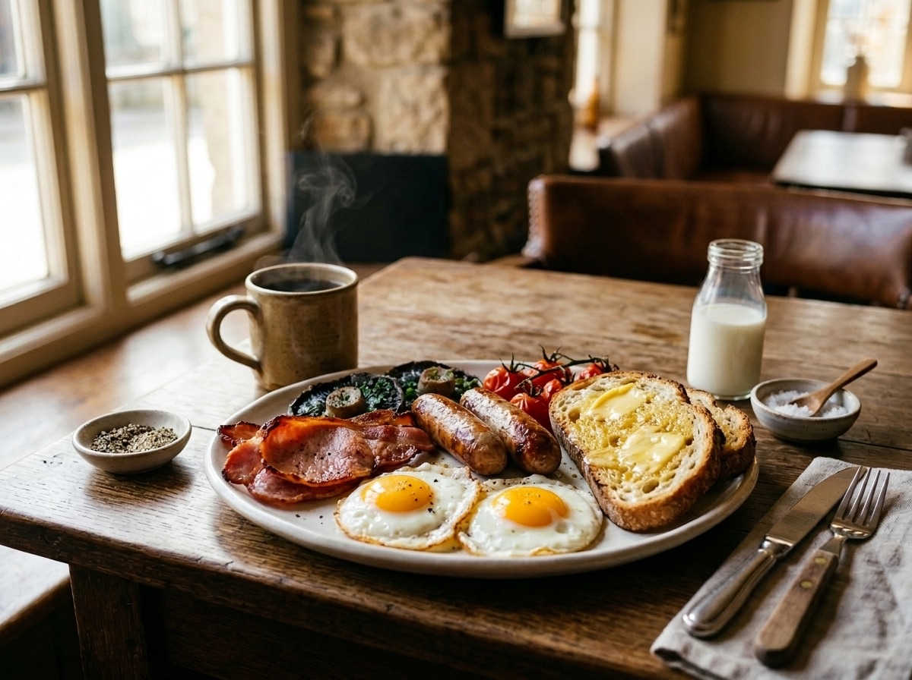

Breakfast & Brunch
Hearty morning plates, lighter brunch options, and daytime drinks right on 24 High Street — easy for walk-ins and pre-booked daytime tables alike.
An independent Yarm High Street pub-bar built for the full pace of the town — welcoming morning breakfast and brunch tables, relaxed daytime catch-ups, live sport, and lively weekend nights.


Whether you are stepping off Yarm's cobbled High Street for a morning coffee and cooked breakfast or meeting friends for a late brunch table, Osbournes brings daytime dining and pub hospitality together under one roof.
Kitchen serving times: [Opening & kitchen hours – owner to confirm]
Hearty morning plates, lighter brunch options, and daytime drinks right on 24 High Street — easy for walk-ins and pre-booked daytime tables alike.
Proper pub mains, sharing plates, and a full bar line-up spanning draught pours, wines, spirits, and low/no-alcohol choices.
Planning a birthday gathering, matchday meet-up, or weekend group night in Yarm? Enquire directly online to hold a table or group area.
From major fixtures on screen to weekend live music and evening sessions on Yarm High Street.
Settle in with friends, draught pints, and bar food for key domestic and international sporting fixtures.
Schedule: [Weekly schedule – owner to confirm]
Acoustic sets, weekend atmosphere, and sociable High Street evenings for groups and regulars.
Line-up: [Weekly schedule – owner to confirm]
Positioned right on Yarm's historic High Street with town-centre cobble parking on the doorstep and Eaglescliffe & Yarm rail links a short taxi or walk away.
Bar opening hours, morning breakfast/brunch service, and main kitchen hours will be published here once confirmed directly with the venue: